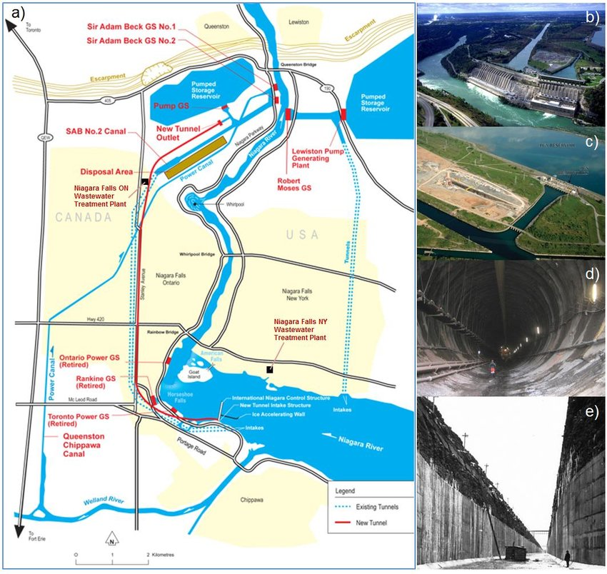

The Niagara power project, which is operated by the New York Power Authority, is New York State’s biggest electricity producer and one of the most iconic renewable energy producers in America. It is in Lewiston, New York, USA. It is far from Niagara Falls, about 7.2 kilometers, 4.5 miles from Lewiston Falls, and the reason for choosing this location is that the water naturally flows downhill at high speed. It provides about 2.6 million kilowatts of clean energy, which provides electricity for more than 2 million houses without any harmful gases. For generating electricity, it uses two main plants (Robert Moses and Lewiston Pump) with 25 turbines powered by 2.83 million liters of water every second. Since it was completed in 1962, President John Kennedy hailed it as one of the marvels of engineering. Besides its main jobs, which generate energy, it helps the economy in this area by reducing energy costs and providing appropriate costs for rural facilities. And the New York Energy Authority still takes care of it through renovations to make sure that it will not damage or stop working, because it is an example of the best way to benefit from the natural environment. The Niagara generating station provides about a quarter of the overall energy that is used in New York and Ontario, as shown in the figure.
The Niagara power project uses a huge tunnel under Niagara Falls to transfer the water of the Niagara River to 2 reservoirs, and this process generates energy from the 2 reservoirs. Overall facilities include 2 intake structures, 2 paths under the ground, connected pump stations, a forebay, Lewiston reservoir, an energy-generating station in Lewiston pump, Niagara Robert Moses station for energy, the Sir Adam Beck generating station, and Niagara Switchyard. Niagara Robert Moses ' station for energy is located in Niagara, in the eastern part of New York, near Niagara Falls. The Sir Adam Beck station and the Robert Moses station were built in front of each other, and they connected with the electrical grid system by high-voltage transmission lines. These are the steps of generating energy: Water Diversion, water flow, turbine rotation, electricity generation, energy transmission, and water. Back to the river. Firstly, before the water falls from Niagara Falls, 2 large intake channels pull the river water in and transfer it to the power station. These intake channels are about 4.5 miles long. When the water arrives at the power station there are large pipes direct this water to the turbines (the speed of the water flow is a main reason for generating energy) then the turbines rotate after the high speed flow of water, this is the first step in converting potential energy into energy that can be used and every turbine connected to generator, when the turbine the inner rotator of the generator rotate then convert the mechanical energy to electricity then the electricity transferred to the houses and businesses and in the last step the water return again to the river, as shown in Figure.
